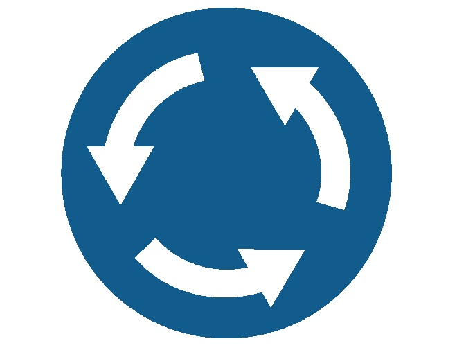
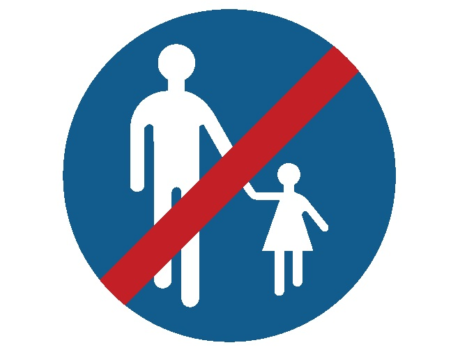
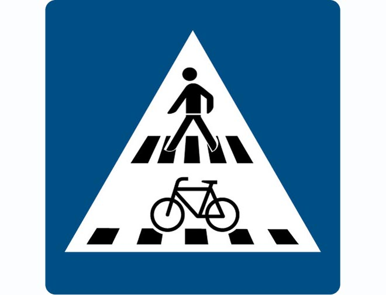
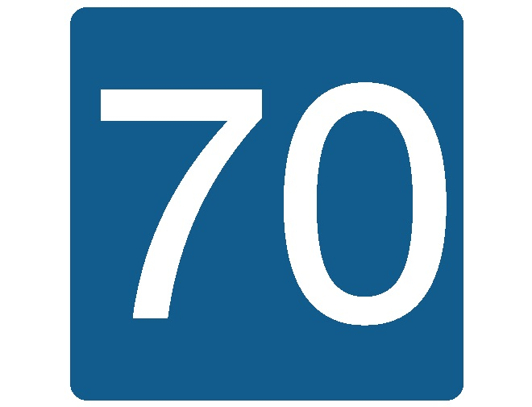
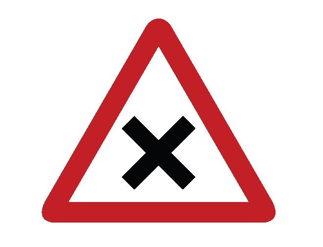
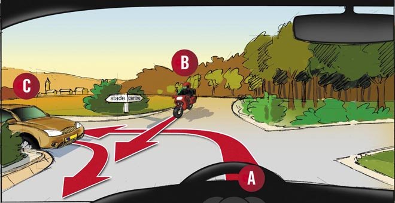

Sources : Legilux, Arrêté GD 23/11/1955, Convention de Vienne 1968
🔺
Panneaux de DANGER — Série A
Série A
📐Forme : Triangle à bord rouge, pointe en haut, fond blanc — Signification : Annonce d'un danger, impose d'adapter la conduite (pas une vitesse précise).
Exemples visuels — panneaux de danger
Danger (générique)
Triangle rouge — série A
Chaussée dégradée
A — Nids-de-poule, dos d'âne
Chaussée glissante
A,4 — Éviter manœuvres brusques
Vent latéral
A — Risque de déviation
Brouillard / Neige
A — Visibilité réduite
Chaînes obligatoires
A — Continuer = chaînes sur 2 roues motrices
PIÈGE SNCA : Un panneau de danger n'impose aucune vitesse précise — il impose d'adapter la conduite. Seul un panneau C,5 (cercle rouge avec chiffre) impose une limite.
Principaux codes : C,1 Sens interdit · C,2 Accès interdit tous véhicules · C,3 Dépassement interdit · C,5 Vitesse max · C,6 Arrêt + stationnement interdits · C,7 Stationnement interdit
🔵
Panneaux d'OBLIGATION — Série D
Série D
📐Forme : Cercle bleu avec symbole blanc — Règle :Rond bleu = toujours une obligation
Direction obligatoire
D — Cercle bleu, symbole blanc

Direction obligatoire (variante)
D — Flèche sens obligatoire

Fin chemin piétons
D barré — Fin d'obligation
PIÈGE SNCA : Rond bleu avec "30" = vitesse minimale obligatoire de 30 km/h, pas maximale ! L'obligation se distingue de l'interdiction uniquement par la couleur (bleu vs rouge).
Principaux codes : D,1 Tout droit · D,2 Direction droite · D,3 Direction gauche · D,5 Vitesse minimale · D,7 Piste cyclable obligatoire · D,8 Chemin piétons obligatoire
🟩
Panneaux d'INDICATION — Série E & F
Série E / F
📐Forme : Carré ou rectangle, souvent fond bleu ou vert — Signification : Information sans interdiction ni obligation
Autoroute (E,1)
Panneau vert — début autoroute

Passage piéton/cycliste
E — Carré bleu avec pictogrammes
Arrêt d'autobus
F — Information transport

Vitesse conseillée
E — Carré bleu (non obligatoire)
Parking (zone)
E,23 — Voitures autorisées
Fin zone piétonne
E barré — Sortie zone
PIÈGE SNCA : La vitesse "conseillée" (carré bleu) n'est pas obligatoire. Elle ne remplace pas une limitation C,5. Si les deux sont présents, c'est la limite C,5 qui prime.
⭐
Panneaux de PRIORITÉ — Série B
Série B
Les 5 panneaux de priorité à connaître parfaitement

Cédez le passage (B,1)
Triangle inversé bord rouge — céder à TOUS les usagers prioritaires
STOP (B,2a)
Octogone rouge — arrêt complet, roues immobilisées, même si route libre
B,5 inversé — Flèche blanche grande = vous êtes prioritaire
Situations de priorité réelles (photos de route)
Priorité à droite — carrefour
B (cyclomoteur à droite) passe avant A (voiture).
Cycliste prioritaire à droite
Je laisse passer le cycliste (B) venant de droite.
Ordre de passage : C → A → B
Identifier qui vient de droite à chaque étape.

Blocage (croisement indonésien)
Aucune solution sans qu'un conducteur renonce à son droit.
Sortie zone piétonne
Céder à gauche, droite ET sens opposé — pas seulement à droite.
Carrefour 3 voies
Je circule en dernier — appliquer la règle de la droite.
PIÈGE SNCA : STOP = arrêt complet même si vous ne voyez aucun véhicule. Un ralentissement n'est pas suffisant — les roues doivent être immobilisées.
PIÈGE SNCA : La route prioritaire ne va pas toujours tout droit. Suivez la ligne épaisse sur le panneau de configuration (B,3) pour savoir où elle tourne.
〰️
Lignes au sol
Marquage
Ligne blanche continue
Interdiction de franchir. Exceptions : accès propriété, contourner obstacle.
Ligne blanche discontinue
Franchissable si la manœuvre est sans danger.
Ligne jaune continue (bordure)
Interdiction absolue d'arrêt et de stationnement.
Ligne jaune discontinue (bordure)
Stationnement interdit. Arrêt autorisé (court).
Ligne zigzag jaune
Arrêt interdit — zones sensibles : écoles, hôpitaux.
Ligne mixte (continue + discontinue)
Côté discontinu : franchissement autorisé. Côté continu : interdit.
Photos de lignes au sol en situation réelle
Ligne jaune discontinue
N'interdit pas l'arrêt — uniquement le stationnement prolongé.
Ligne continue blanche
Dépassement autorisé uniquement si vous ne franchissez pas la ligne.
Stationnement interdit 1er–15
Panneau alterné — interdit la 1ère quinzaine du mois.
PIÈGE SNCA : Ligne continue blanche ≠ interdiction de dépassement. Vous pouvez dépasser si vous ne franchissez pas la ligne (ex : véhicule assez étroit). La ligne mixte : regardez de quel côté vous vous trouvez.
🚦
Feux tricolores & Feux spéciaux
Feux
Les 5 états à connaître
Rouge fixe
Arrêt obligatoire avant la ligne
Jaune fixe
Arrêter si possible sans danger — sinon passer
Vert fixe
Passage autorisé — céder aux piétons si on tourne
Jaune clignotant
Prudence — règles normales de priorité s'appliquent
Rouge + flèche verte
Passer dans la direction de la flèche, en cédant aux piétons
🚨Passage à niveau : Rouge clignotant = arrêt obligatoire immédiat. Repartir uniquement quand les feux s'éteignent ET barrières complètement ouvertes.
🚌Feux bus/tram : Barre horizontale blanche = arrêt · Barre verticale ou point blanc = passage autorisé
🌫️Tunnel : Le panneau tunnel oblige à allumer les feux de croisement — il n'impose pas de vitesse précise (seul C,5 le fait).
PIÈGE SNCA : Au passage à niveau, vous pouvez repartir dès que les feux rouges s'éteignent — vous n'attendez pas la fin du passage du train ni l'ouverture complète des barrières si elles ne sont pas équipées de feux.
🟡
Signalisation temporaire & Fin de restrictions
🟡 Signalisation temporaireCouleur jaune/orange · Travaux, déviations, accidents · Prime sur la signalisation permanente
⚪ Fin de toutes restrictionsCercle blanc + 5 barres noires obliques · Annule toutes les limitations précédentes (vitesse, dépassement, etc.)
Fin toutes restrictions
Cercle blanc + barres obliques — annule vitesse, dépassement, etc.
50
FIN DE LIMITE
Fin limitation de vitesse
Panneau vitesse barré — la limite précédente cesse
📋
Mémo — Les règles à retenir absolument
🔺
Triangle bord rouge, pointe ↑
DANGER
🔻
Triangle inversé bord rouge, pointe ↓
CÉDEZ LE PASSAGE
🔴
Rond bord rouge, fond blanc
INTERDICTION
🔵
Rond bleu, symbole blanc
OBLIGATION
🔶
Losange jaune/blanc
ROUTE PRIORITAIRE
🟦
Carré ou rectangle bleu/vert
INFORMATION
🛑STOP = arrêt complet, roues immobilisées, même route libre
🟡Signalisation temporaire (jaune) prime sur signalisation permanente
↔️Flèche rouge + grande = vous cédez · Flèche blanche + grande = vous êtes prioritaire
🚇Tunnel ≠ limitation automatique — seul un C,5 impose la vitesse
🔵Rond bleu "30" = vitesse minimale, pas maximale !